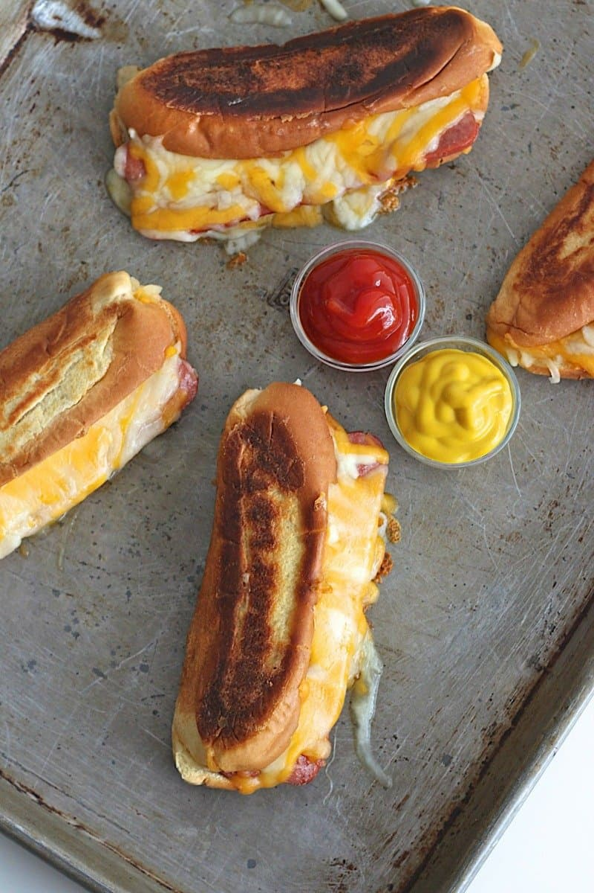

Hot Dog Recipe

Description
Grilled Cheese Hot Dogs are a brilliant combination of two classics: grilled cheese and hot dogs! A buttery crisp hot dog bun filled with lots of melted cheese and a juicy grilled hot dog. Why choose when you can have both?
Ingredients
- 6 hot dog buns (I use top sliced buns)
- 6 hot dogs
- 3 cups shredded monterey jack and cheddar cheeses, mixed
- 6 tablespoons soft butter, for brushing buns
Instructions
- Heat a non-stick skillet over medium heat.
- Open and roll each hot dog bun flat with a rolling pin. Spread the outside of each bun with 1 tablespoon butter. Place it on the skillet, butter side down, and sprinkle top evenly with 1/3 cup shredded cheese.
- Slice each hot dog lengthwise to where it’s still connected, but will lay flat on the grill. Place hot dog, flat side down, on the grill next to the bun. Grill for 2 minutes on the flat side or until it starts to brown and then flip over and let grill for another minute on the other side. Transfer the hot dog to one side of the bun and sprinkle it with 3 tablespoons shredded cheese.
- Close bun over hot dog and let grill until cheese is completely melted. Serve with ketchup and mustard.